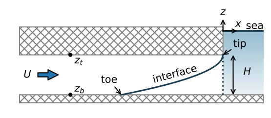
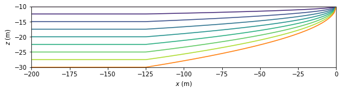
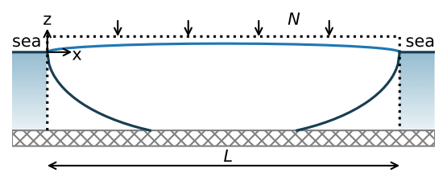
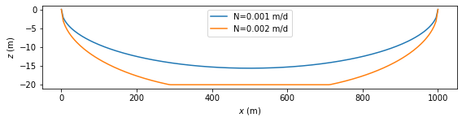
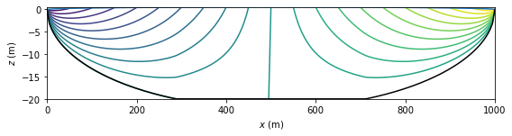
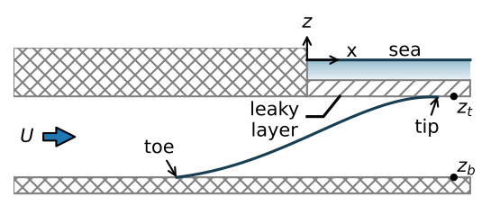
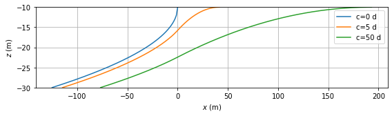
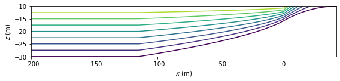

Steady one-dimensional flow in coastal aquifers
Contents

The Python code provided below is from
Analytical Groundwater Modeling: Theory and Applications Using Python
by Mark Bakker and Vincent Post
ISBN 9781138029392
The book is published by CRC press and is available here.
This Notebook is provided under the MIT license.
© 2022 Mark Bakker and Vincent Post
Steady one-dimensional flow in coastal aquifers#
%matplotlib inline
import numpy as np
import matplotlib.pyplot as plt
plt.rcParams["figure.figsize"] = (8, 3) # set default figure size
plt.rcParams["contour.negative_linestyle"] = 'solid' # set default line style
plt.rcParams["figure.autolayout"] = True # same as tight_layout after every plot
Confined interface flow#
# parameters
k = 10 # hydraulic conductivity, m/d
zt = -10 # top of aquifer, m
zb = -30 # bottom of aquifer, m
rhof = 1000 # density of fresh water, kg/m^3
rhos = 1025 # density of salt water, kg/m^3
U = 0.4 # flow towards the coast, m^2/d
H = zt - zb # aquifer thickness, m
# solution
alpha = rhof / (rhos - rhof)
phitoe = 0.5 * k * H ** 2 / alpha
Cc = (0.5 * k * H ** 2 + k * H * zb) / alpha
x = np.linspace(-200, 0, 150)
phi = -U * x
h = np.zeros_like(phi)
h[phi <= phitoe] = np.sqrt(2 * phi[phi <= phitoe] / (k * alpha)) - zt / alpha
h[phi > phitoe] = (phi[phi > phitoe] - Cc) / (k * H)
zi = np.maximum(-alpha * h, zb)
#
xtoe = -k * H**2 / (2 * alpha * U)
print(f'x-location of the toe: {xtoe:.0f} m')
# stream function
xg = [x, x]
zg = [zi, zt * np.ones(len(x))]
psi = [np.zeros(len(x)), -U * np.ones(len(x))]
x-location of the toe: -125 m
# basic streamline plot
plt.subplot(111, aspect=2)
plt.contour(xg, zg, psi)
plt.plot(x, zi, 'C1')
plt.xlabel('$x$ (m)')
plt.ylabel('$z$ (m)');

Unconfined interface flow#
# parameters
k = 40 # hydraulic conductivity, m/d
zb = -20 # bottom of aquifer, m
rhof = 1000 # density of fresh water, kg/m^3
rhos = 1025 # density of salt water, kg/m^3
L = 1000 # width of island, m
N1 = 0.001 # recharge rate 1, m/d
N2 = 0.002 # recharge rate 2, m/d
alpha = rhof / (rhos - rhof) # alpha factor
# solution
def pot(x, N, L):
phi = -0.5 * N * (x**2 - L * x)
return phi
def pot2h(pot, k, alpha, zb):
phitoe = 0.5 * k * (alpha + 1) / alpha**2 * zb**2
Cu = -0.5 * k * (alpha + 1) * zb**2 / alpha
h = np.zeros(len(pot))
h[pot < phitoe] = np.sqrt(2 * pot[pot < phitoe] / (k * (alpha + 1)))
h[pot >= phitoe] = np.sqrt(2 * (pot[pot >= phitoe] - Cu) / k) + zb
return h
def zinterface(h, alpha, zb):
return np.maximum(-alpha * h, zb)
x = np.linspace(0, L, 201)
phi1 = pot(x, N1, L)
phi2 = pot(x, N2, L)
h1 = pot2h(phi1, k, alpha, zb)
h2 = pot2h(phi2, k, alpha, zb)
zi1 = zinterface(h1, alpha, zb)
zi2 = zinterface(h2, alpha, zb)
phitoe = 0.5 * k * (alpha + 1) / alpha**2 * zb**2
print(f'Phi_toe: {phitoe:.2f}')
print(f'N={N1} results in maximum phi {np.max(phi1)}')
print(f'N={N2} results in maximum phi {np.max(phi2)}')
Phi_toe: 205.00
N=0.001 results in maximum phi 125.0
N=0.002 results in maximum phi 250.0
# basic plot
plt.subplot(111, aspect=10)
plt.plot(x, zi1, label=f'N={N1} m/d')
plt.plot(x, zi2, label=f'N={N2} m/d')
plt.legend()
plt.xlabel('$x$ (m)')
plt.ylabel('$z$ (m)');

# solution
xg = [x, x]
zg = [zi2, h2]
psi = [np.zeros_like(x), N2 * (x - L / 2)]
# basic streamline plot
plt.subplot(111, aspect=10)
plt.contour(xg, zg, psi, np.arange(-1, 1, 0.1))
plt.plot(x, h2, 'C0')
plt.plot(x, zi2, 'k')
plt.xlabel('$x$ (m)')
plt.ylabel('$z$ (m)');

Combined confined/semi-confined interface flow#
# parameters
k = 10 # hydraulic conductivity, m/d
zt = -10 # top of aquifer, m
zb = -30 # bottom of aquifer, m
alpha = 40 # alpha factor, -
clist = [1e-12, 5, 50] # three values of resistance of leaky layer, d
U = 0.4 # flow towards the coast, m^2/d
H = zt - zb # aquifer thickness, m
# solution
def interface(k, zt, zb, c, alpha, U):
H = zt - zb
# below sea
hstar = -zt / alpha
xtip = (18 * U * k * alpha * c**2) ** (1 / 3)
xsea = np.linspace(0, xtip, 100)
hsea = hstar + (xsea - xtip)**2 / (6 * k * alpha * c)
h0 = hstar + xtip ** 2 / (6 * k * alpha * c)
# below land
phi0 = 0.5 * k * alpha * (h0 - hstar)**2
phitoe = 0.5 * k * H ** 2 / alpha
xtoe = -(phitoe - phi0) / U
Cc = (0.5 * k * H ** 2 + k * H * zb) / alpha
xland = np.linspace(xtoe, 0, 100)
phi = -U * xland + phi0
hland = np.sqrt(2 * phi/ (k * alpha)) + hstar
# combine solution
x = np.hstack((xland, xsea))
zi = -alpha * np.hstack((hland, hsea))
return x, zi
# basic plot
plt.subplot(111, aspect=4, ylim=(-30, -10))
for c in clist:
x, zi = interface(k=k, zt=zt, zb=zb, c=c, alpha=alpha, U=U)
plt.plot(x, zi, label=f'c={c:.0f} d')
plt.legend()
plt.xlabel('$x$ (m)')
plt.ylabel('$z$ (m)')
plt.grid();

c = 5
x, zi = interface(k=k, zt=zt, zb=zb, c=5, alpha=alpha, U=U)
x = np.hstack((-200, x))
zi = np.hstack((zb, zi))
Qx = U * np.ones_like(x)
lab = np.sqrt(c * k * H)
xtip = (18 * U * k * alpha * c**2) ** (1 / 3)
Qx[x>0] = -(x[x>0] - xtip) ** 3 / (18 * k * alpha * c**2)
xg = [x, x]
zg = [zi, zt * np.ones_like(x)]
psi = [np.zeros_like(x), Qx]
# basic streamline plot
plt.subplot(111, aspect=2)
plt.contour(xg, zg, psi)
plt.xlabel('$x$ (m)')
plt.ylabel('$z$ (m)');
